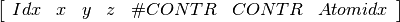
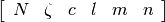

General Considerations¶
Inside the code are four different objects that ties the different moduels together. The basisset obejct “basis”, the inputfile object “input”, the settingsfile object “settings” and the results object “results”.
Basisset object¶
The basisset object is a list of list with the following structure:

Idx is the AO index. Atomidx, is the index of the associated atom. #CONTR contains the number of primitive functions in the contracted.
CONTR contains all the information about the primitive functions and have the form:

Settings obejct¶
The settings are parsed around in the code as a dictionary.
Results object¶
The results are parsed around in the code as a dictionary.
Integral storage¶
All of the integrals used in the code, is stored in slowquant/temp.
- enuc.npy, nuclear-nucelar repulsion
- Ekin.npy, electronic kinetic energy AO basis
- nucatt.npy, nuclear-electron attraction AO basis
- overlap.npy, electron-electron overlap AO basis
- twoint.npy, electron-electron repulsion AO basis
- twointMO.npy, electron-electron repulsion MO basis
- twointMOspin.npy, electron-electron repulsion MO spin basis